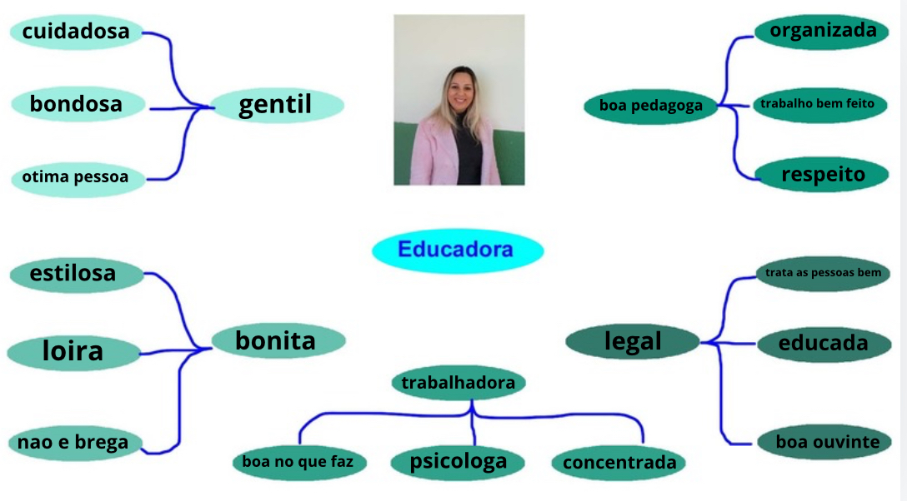
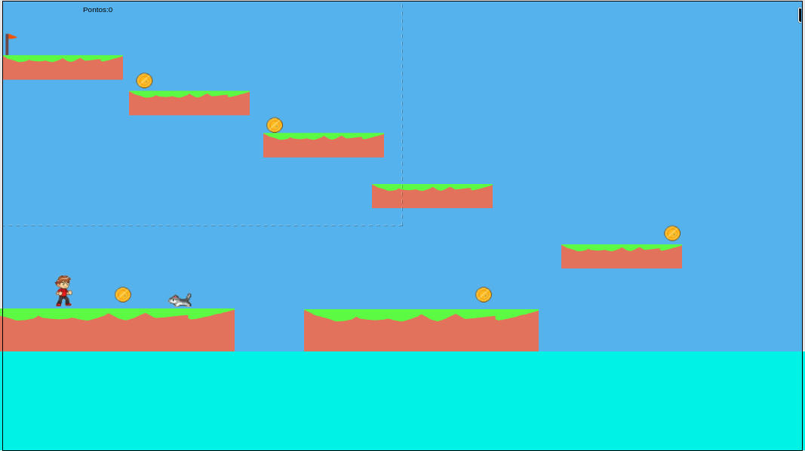

Formação Acadêmica: Pós graduação em Pedagogia, Pós em educação essencial psicologia e graduação em psicologia.
Do Que trabalhou: Pedagoga de todos os técnicos.
Para quais turmas do técnico dá aula e quais as matérias: Pedagoga e Professora de escola particular.


Clique na imagem acima para jogar um produzido especialmente para a professora
Cândida!
Professora Michele,
Professore brilhantes ensinam uma profissão. Professores fascinantes ensinam para a vida.
ASS: Lucas Ryan 2 TDS
“Quem tem uma pedagoga tem tudo! Quem não tem, que arrume.”
Leonardo Rense de Aguiar - 4º INFO
 Clique na imagem acima para dar sua opinião sobre nosso projeto!
Clique na imagem acima para dar sua opinião sobre nosso projeto!